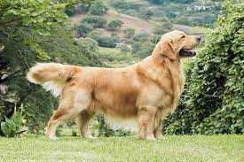
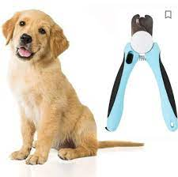

Порода
золотистий ретривер
має доброзичливий вигляд, він ідеально симетричний, рухається прекрасно, плавно, довгими потужними кроками. Колір: Золотистий ретривер буває різних відтінків золотого, від світлого до темного.
Золотистий ретривер — ніжний собака зі спокійним характером, який зазвичай добре пристосовується до сімейного життя. Представники породи люблять брати участь у всіх заходах, чи то у приміщенні, чи то на відкритому повітрі. Вони, перш за все, ретривери і намагатимуться притягти, потягнути або перенести все, що вміститься до рота. Вони також люблять воду, і слід подбати про їхню безпеку близько води. Золотисті ретривери досить неспокійні, і під час дресирування слід бути дуже обережним, і пам'ятати про їхню чутливість.
У порівнянні з собаками менших порід собаки великих порід не тільки мають підвищений апетит, але й потребують збалансованого раціону з різних поживних речовин, що містить мінерали і вітаміни.Золотистий ретривер має схильність до здуття і проблем зі шлунком; якщо годувати його частіше, але меншими порціями, це допоможе мінімізувати цей ризик.
Через густоту своєї шерсті золотисті ретривери потребують регулярного грумінгу. Підшерстя завдяки своїм водостійким властивостям є надзвичайно товстим, тому не слід дозволяти йому заплутуватись, адже це завдавало б зайвих страждань тварині. Хоча така довга шерсть збирає на себе бруд і всмоктує воду, її легко чистити, коли шерсть висохне.
Важливо знати
- Собака підходить для недосвідчених господарів
- Любить енергійні прогулянки
- Чудово ладнає з іншими домашніми тваринами
Деякі нюанси
- Потребує розчісування через день
- Деяка слинотеча